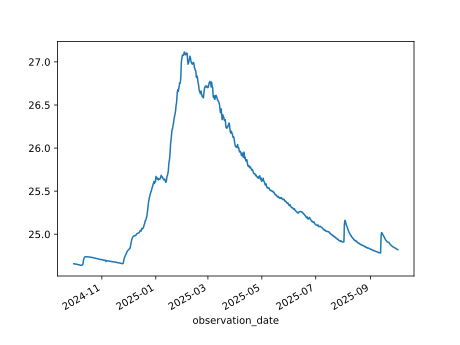

sgu-client#
A modern Python client for the groundwater data APIs of the Geological Survey of Sweden (SGU), with typed responses and pandas integration.
Installation#
uv add sgu-client
# or: pip install sgu-client
For pandas support:
uv add "sgu-client[recommended]"
# or: pip install "sgu-client[recommended]"
Quick example#
# import the SGU Client
from sgu_client import SGUClient
# create the client, which closes its session when the block ends
with SGUClient() as client:
# get groundwater monitoring stations in southern Sweden
stations = client.levels.observed.get_stations(
bbox=[12.0, 55.0, 16.0, 58.0],
limit=50
)
# get recent measurements with date filtering
measurements = client.levels.observed.get_measurements_by_name(
"95_2",
tmin="2024-10-01",
tmax="2025-09-30",
)
# convert to pandas Series (requires pandas)
s = measurements.to_series()
s.plot()

Explore the docs#
User Guide
Install, create a client and fetch groundwater levels and chemistry data.
API Reference
Every client method, response model and field, with its SGU API name.
About
License, data source and changelog.